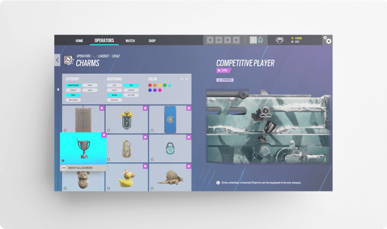
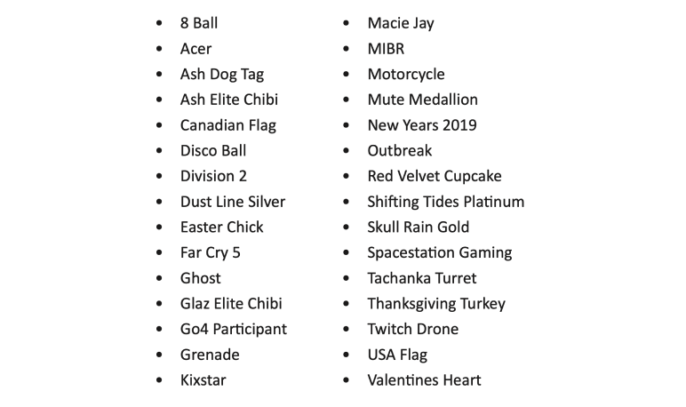

Menu System Revamp
2020
Rainbow Six: Siege is a tactical first-person shooter focused on teamwork and communication. Players have a wide range of characters they can use, each possessing their own personal loadouts. In addition to the vast amount of characters available to use, Rainbow Six: Siege features an in-depth customization system, allowing players to change the look and feel of their characters in-game, including uniforms, weapon attachments, skins and charms.
While these options are organized by characters and weapons, charms are a global entity, meaning they are available to use on any character in-game. With the introduction of hundreds of new charms over the years, the organizational system has become outdated and confusing, featuring little to no organizational process at all.
In order to consult and improve this process, I conducted a number of user tests and research activities to gather valuable user input on the matter. Taking feedback from both casual and competitive players, I amassed a considerable amount of user input that was used to craft the final product for my assignment. In order to avoid skewing my data, I broadened my user outreach to include people who had never played Rainbow Six: Siege before. I wanted to ensure my new and improved navigational system was accessible and easy to use by anyone.
The ChallengeThis assignment posed a considerable challenge: How might I create an information architecture from a large number of items featuring different styles? In order to keep myself from becoming overwhelmed with the vast amount of charms available in the game, I selected an excerpt of 30 charms that I thought represented the current organizational system well. Below you can find a list of the 30 charms available in my information architecture.
My research started out with a simple card sort. I wanted to see exactly how users perceived the content I was providing them.
In addition to my card sort, I also included a post-assessment questionnaire to gauge my participant’s choice, including reasons why players equip certain charms. Is it for the rarity? The appearance? The colour? I also took this time to have participants rate the effectiveness of the current charm rarity system available in-game, where a whopping 100% of users recorded a negative rating. While I had a feeling the current system would receive a bad rating, I didn’t think it would be this extreme. This pointed out a major warning sign in my research; something needs to change with the current rarity system.
The results taken from my open card sort showed that I was on the right track. With a 70% agreement rate, the categories created by participants gave me great insight into how I should organize my information architecture.
I also learned a great deal from my post-assessment questions. In addition to my question regarding the current rarity system, I also wanted to gauge users on why they were equipping certain charms. This data was incredibly useful as it provided me with a recurring theme: most users equip charms that suit the rest of their customization options. I was beginning to understand why my participants rated the rarity system so poorly; players don’t care about the rarity of the charm, but rather what the charm looks like altogether. It was at this moment I realized I needed to set up a filter system in order to allow users to find the exact charm they are looking for with ease.
My initial open card sorts set me up in a great position for tree testing. With a 70% agreement rate, I knew that I could depend on most of the categories created by my participants. I created a navigational system, including categories and sub-categories, and set up a tree testing assignment online. My assessment included 3 simple tasks:
1. You have a red weapon skin equipped. Find and equip a charm that you feel would suit well.
2. You have been playing the operator Ash a lot and realized you don’t have any charms equipped on her. Find and equip a charm that you feel would suit well.
3. New Years is fast approaching, time to get into the spirit! Find and equip a charm that you feel would suit well.
As you can see from the statistics included above, I saw a favourable amount of success in my tasks. The only task that seemed to trip up participants was task 2, which I assume was mainly because the question is geared towards people who have played the game. Participants who have never played Rainbow Six: Siege before may have trouble understanding the task.
ReccomendationsIncorporating the data collected from both my open card sort as well as my tree testing, I found it imperative that the organizational system of the charm menu needs an overhaul. Due to the manner of charms being a global asset, there needs to be some sort of navigation or filter system in place. There are simply too many charms to not have an organizational system.
To achieve this, I laid out a number of reccomendations for Ubisoft to consider:
Filter System - My first recommendation is to replace the pre-existing rarity system with well-structured charm filter. While a navigation could work nicely, it benefits known-item searches over unknown-item searches. As I learned from my open card sort, the majority of users are performing unknown-item searches; they have an idea of what kind of charm they would like to equip, but they do not know the exact charm they would like to use.
The filter system would allow users to filter their searches in up to 3 ways: by category, by sub-category, and by colour. As I learned from my open card sort, colours are very important to users. For this reason, I wanted to make it as easy as possible to find charms of a certain colour. The main category filter would feature the main labels taken from my tree testing session: content creators, countries, events, miscellaneous, operators, ranked and Ubisoft. Users can restrict their search even further by enabling or disabling sub-category filters. These filters would be dependant on what main category filters you have enabled.
Search System - My second recommendation is to include a search system allowing users to bypass the filter system and find exactly what they are looking for. Due to the wide variety of names for charms, it is imperative that a controlled vocabulary is created to accommodate for different styles of searches. For example, the motorcycle charm is actually called “Flash Drive” in-game, however, a simple search for motorcycle should find the charm for the user as well. This would be done through preferred and variant terms.
The key to any successful search system is a powerful controlled vocabulary that accommodates a wide range of terms and phrases. Since colour plays a massive part in user’s searches, it is imperative to incorporate colour searches as well. A search for “red flag” would find any flag charms that are tagged with the colour red. A search for “gold chibi” would find any chibi charms tagged with the colour gold.